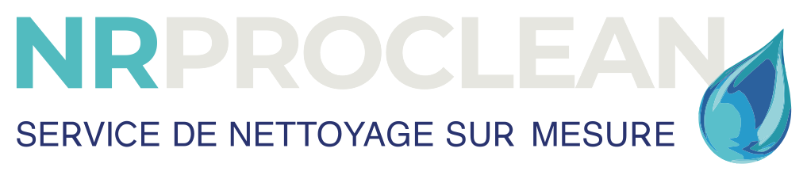

Conditions générales de vente
Services de nettoyage et d'entretien : Particuliers et Professionnels
Version en vigueur au 25 avril 2025
Les présentes Conditions Générales de Vente (ci-après « CGV ») régissent l'ensemble des relations contractuelles entre la société NR PROCLEAN SERVICES SRL et toute personne physique ou morale, particulier ou professionnel, qui sollicite l'exécution de prestations de nettoyage et d'entretien proposées par NR PROCLEAN SERVICES SRL (ci-après le « Client »).
Article 1 : Identification du prestataire
NR PROCLEAN SERVICES SRL
Siège social : Rue Belvaux 163, 4030 Grivegnée (Belgique)
Numéro d'entreprise (BCE) / TVA : BE 1022.740.185
Email : contact@nrproclean.be
Téléphone : +32 484 44 24 21
(ci-après « NR PROCLEAN SERVICES SRL » ou « le Prestataire »)
Article 2 : Champ d'application
Les présentes CGV s'appliquent, sans restriction ni réserve, à l'ensemble des prestations de nettoyage et d'entretien fournies par NR Proclean, que le Client soit un particulier (consommateur au sens du Code de droit économique) ou un professionnel agissant dans le cadre de son activité.
Toute commande implique l'acceptation sans réserve des présentes CGV, que le Client reconnaît avoir lues et comprises préalablement à sa commande.
Les présentes CGV prévalent sur toutes conditions générales d'achat du Client, sauf accord dérogatoire exprès et écrit de NR Proclean.
NR Proclean se réserve le droit de modifier ses CGV à tout moment ; les CGV applicables à une commande sont celles en vigueur à la date de celle-ci.
Article 3 : Définitions
- Client : toute personne physique (particulier) ou morale (professionnel) passant commande auprès de NR Proclean.
- Prestation ponctuelle : intervention de nettoyage unique et non récurrente (nettoyage en profondeur, fin de chantier, remise en état, etc.).
- Prestation récurrente : prestation exécutée selon une fréquence régulière définie contractuellement (hebdomadaire, bimensuelle, mensuelle, etc.).
- Devis : offre de prix établie par NR Proclean sur la base des besoins exprimés par le Client.
Article 4 : Devis et commande
Toute prestation fait l'objet d'un devis préalable, établi sur la base des informations communiquées par le Client (nature des locaux, surface, état, fréquence souhaitée, etc.). Sauf mention contraire, le devis est valable 30 jours calendrier à compter de sa date d'émission.
La commande est réputée ferme et définitive dès acceptation du devis par le Client (signature, accord écrit, oral ou électronique, ou commencement d'exécution demandé par le Client) et, le cas échéant, versement de l'acompte prévu à l'article 5.
Toute modification de la commande demandée par le Client après acceptation du devis (surface, fréquence, nature des prestations, etc.) peut donner lieu à un avenant et à une adaptation du prix.
Article 5 : Prix et modalités de paiement
5.1 Prix. Les prix sont exprimés en euros. Pour les Clients professionnels, les prix s'entendent hors TVA, celle-ci étant ajoutée au taux en vigueur. Pour les Clients particuliers, les prix s'entendent TVA comprise.
5.2 Prestations ponctuelles. Pour toute intervention unique, qu'elle concerne un particulier ou un professionnel, un acompte de 30 % du montant total du devis est exigible à la commande et conditionne la réservation du créneau d'intervention. Le solde (70 % restant) est facturé à l'issue de la prestation et est payable comptant, sauf accord contraire mentionné sur le devis ou la facture.
5.3 Prestations récurrentes. Pour les contrats de nettoyage récurrent, les prestations sont facturées mensuellement. Les factures sont payables dans les 15 jours calendrier suivant la fin du mois au cours duquel les prestations ont été exécutées (« 15 jours fin de mois »).
5.4 Modalités de paiement. Le paiement s'effectue par virement bancaire sur le compte communiqué sur le devis ou la facture, ou par tout autre moyen expressément convenu entre les parties.
5.5 Révision de prix. Pour les contrats de prestations récurrentes, les prix convenus tiennent compte des coûts en vigueur à la conclusion du contrat, notamment les salaires et charges sociales applicables au secteur du nettoyage (Commission paritaire 121). Toute indexation salariale sectorielle, hausse des charges sociales ou modification légale ou réglementaire impactant le coût de revient sera répercutée de plein droit sur le prix convenu, moyennant notification écrite préalable au Client.
Article 6 : Retard de paiement
À défaut de paiement à l'échéance, et après mise en demeure restée infructueuse, les sommes dues portent intérêt de plein droit :
- pour les Clients professionnels : au taux d'intérêt légal applicable aux transactions commerciales (loi du 2 août 2002 concernant la lutte contre le retard de paiement dans les transactions commerciales), majoré d'une indemnité forfaitaire minimale de 40 EUR pour frais de recouvrement, sans préjudice d'une indemnisation complémentaire sur justificatifs ;
- pour les Clients particuliers : au taux d'intérêt légal, ainsi qu'une indemnité forfaitaire de retard, dans les limites fixées par le Code de droit économique (Livre XIX), après mise en demeure restée sans effet pendant 14 jours calendrier.
NR PROCLEAN SERVICES SRL se réserve le droit de suspendre l'exécution des prestations en cours (notamment récurrentes) en cas de non-paiement persistant, après mise en demeure restée infructueuse.
En cas de non-paiement d'une facture à son échéance, NR PROCLEAN SERVICES SRL est également en droit, de plein droit et sans mise en demeure préalable, de mettre fin immédiatement aux prestations en cours, sans préavis ni indemnité à son égard, sans préjudice de son droit à réclamer le paiement des sommes dues et des indemnités prévues au présent article.
Article 7 : Exécution des prestations
NR PROCLEAN SERVICES SRL s'engage à exécuter les prestations avec soin et diligence, dans le respect des règles de l'art, au moyen de personnel qualifié et de produits et matériel adaptés.
Les dates et heures d'intervention sont fixées de commun accord et communiquées au Client à titre indicatif. NR PROCLEAN SERVICES SRL s'efforce de respecter les créneaux convenus, mais un retard raisonnable ou un dépassement ponctuel, lié à des aléas indépendants de sa volonté (circulation, intervention précédente prolongée, indisponibilité imprévue, etc.), n'engage pas sa responsabilité et ne donne pas droit à indemnité, réduction de prix ou annulation de la commande.
Le Client s'engage à permettre l'accès aux locaux à la date et à l'heure convenues. Toute impossibilité d'accès qui lui est imputable pourra donner lieu à la facturation de l'intervention prévue, sauf annulation dans les délais prévus à l'article 9.
Article 8 : Obligations du Client
Le Client s'engage à :
- fournir des informations exactes et complètes sur la nature et l'état des lieux à nettoyer ;
- signaler avant l'intervention tout élément fragile, sensible ou nécessitant une précaution particulière ;
- garantir l'accès à l'eau et à l'électricité nécessaires à l'exécution des prestations, sauf convention contraire ;
- s'acquitter du prix convenu dans les délais fixés à l'article 5.
Article 9 : Annulation et report
Le Client peut annuler ou reporter une intervention sans frais en informant NR PROCLEAN SERVICES SRL au moins 48 heures à l'avance.
Toute annulation ou report communiqué dans un délai inférieur à 48 heures, ou toute absence du Client / impossibilité d'accès au jour convenu, pourra donner lieu à la facturation d'une indemnité forfaitaire égale à 30 % du montant du devis (correspondant à l'acompte déjà versé, le cas échéant) ou, pour les prestations récurrentes, au tarif de l'intervention concernée.
NR PROCLEAN SERVICES SRL se réserve également le droit de reporter une intervention en cas de force majeure ou de circonstance exceptionnelle, moyennant information du Client dans les meilleurs délais.
Article 10 : Droit de rétractation (Clients consommateurs)
Conformément aux articles VI.47 et suivants du Code de droit économique, le Client consommateur qui conclut un contrat à distance ou hors établissement (commande par téléphone, email, formulaire en ligne, ou lors d'une visite à domicile sollicitée par le Client) dispose d'un délai de 14 jours calendrier à compter de la conclusion du contrat pour exercer son droit de rétractation, sans devoir justifier de motif.
Le Client consommateur qui souhaite que la prestation débute avant l'expiration de ce délai peut en faire la demande expresse et écrite (email ou mention signée sur le devis). S'il exerce ensuite son droit de rétractation, il sera redevable d'un montant proportionnel aux prestations déjà fournies jusqu'à la communication de sa rétractation, conformément à l'article VI.53, 8° du Code de droit économique. Lorsque la prestation est intégralement exécutée avant la fin du délai de rétractation, avec l'accord exprès du consommateur, celui-ci perd son droit de rétractation.
Ce droit de rétractation ne s'applique pas aux Clients professionnels agissant dans le cadre de leur activité.
Article 11 : Réclamations et garanties
Toute réclamation relative à la qualité d'une prestation doit être communiquée à NR PROCLEAN SERVICES SRL à l'adresse contact@nrproclean.be dans un délai de 48 heures suivant l'intervention, accompagnée dans la mesure du possible de tout élément utile (photos, description précise).
NR PROCLEAN SERVICES SRL s'engage à examiner toute réclamation fondée avec diligence et, le cas échéant, à proposer une nouvelle intervention corrective dans un délai raisonnable, sans frais supplémentaire pour le Client.
À défaut de réclamation dans le délai précité, la prestation est réputée acceptée sans réserve.
Article 12 : Responsabilité et assurance
NR PROCLEAN SERVICES SRL est tenue à une obligation de moyens dans l'exécution de ses prestations.
NR PROCLEAN SERVICES SRL a souscrit une assurance en responsabilité civile professionnelle couvrant les dommages pouvant résulter de ses interventions. Sa responsabilité ne pourra être engagée qu'en cas de faute prouvée et sera limitée au montant de la prestation concernée, sauf dol ou faute grave, et sans préjudice des dispositions impératives applicables aux Clients consommateurs.
NR PROCLEAN SERVICES SRL ne pourra être tenue responsable des dommages résultant de l'état préexistant des surfaces, matériaux ou équipements, ni des dommages causés à des objets de valeur ou fragiles non signalés préalablement par le Client conformément à l'article 8.
Article 13 : Non-débauchage du personnel
En faisant appel aux services de NR PROCLEAN SERVICES SRL, le Client s'engage à ne pas employer, engager ou faire travailler, directement ou indirectement (y compris via une société liée ou un sous-traitant), un membre du personnel de NR PROCLEAN SERVICES SRL affecté à l'exécution de ses prestations, pendant toute la durée du contrat et pendant une période de 6 mois suivant la fin de celui-ci, sauf accord écrit et préalable de NR PROCLEAN SERVICES SRL.
Toute violation de cet engagement donnera lieu, de plein droit, au paiement par le Client d'une indemnité forfaitaire équivalente à six mois de la rémunération brute du membre du personnel concerné, sans préjudice du droit de NR PROCLEAN SERVICES SRL de réclamer réparation d'un dommage plus élevé sur justificatifs.
Article 14 : Force majeure
Aucune des parties ne pourra être tenue responsable d'un manquement à ses obligations résultant d'un cas de force majeure tel que défini par la jurisprudence belge (intempéries exceptionnelles, grève, pandémie, décision administrative, etc.). L'exécution des obligations concernées est suspendue pendant la durée de l'événement.
Article 15 : Durée et résiliation des contrats récurrents
Sauf durée différente précisée au devis/contrat, les contrats portant sur des prestations récurrentes sont conclus pour une durée initiale d'un an à compter de la date de la première intervention. Ils se renouvellent ensuite tacitement, par périodes successives d'un an, sauf notification contraire de l'une des parties par écrit (email ou courrier recommandé), moyennant un préavis de 3 mois avant l'échéance.
En cas de résiliation par le Client en cours de contrat, en dehors des cas prévus à l'article 6 ou d'un manquement de NR PROCLEAN SERVICES SRL à ses obligations, le Client sera redevable d'une indemnité de résiliation équivalente au montant mensuel convenu pour les prestations, multiplié par le nombre de mois restant à courir jusqu'au terme de la période contractuelle en cours.
NR PROCLEAN SERVICES SRL se réserve le droit de résilier ou suspendre un contrat de plein droit, sans préavis ni indemnité à son égard, en cas de manquement grave du Client à ses obligations, notamment en cas de défaut de paiement persistant après mise en demeure restée infructueuse.
Pour les Clients consommateurs, les dispositions du présent article s'appliquent sans préjudice des règles impératives de protection du consommateur, notamment en matière de clauses abusives.
Article 16 : Protection des données à caractère personnel
Les données personnelles communiquées par le Client sont traitées par NR PROCLEAN SERVICES SRL conformément au Règlement (UE) 2016/679 (RGPD) et à la législation belge applicable, aux seules fins de gestion de la relation commerciale (devis, facturation, planification des interventions, communication).
Ces données sont conservées pendant la durée nécessaire à ces finalités et aux obligations légales, notamment comptables. Le Client dispose d'un droit d'accès, de rectification, d'effacement, de limitation et d'opposition, qu'il peut exercer en écrivant à contact@nrproclean.be.
Article 17 : Droit applicable et règlement des litiges
Les présentes CGV sont soumises au droit belge.
En cas de litige, les parties s'efforceront de trouver une solution amiable. Les Clients consommateurs peuvent, à cet effet, recourir gratuitement au Service de Médiation pour le Consommateur (www.mediationconsommateur.be) ou à la plateforme européenne de règlement en ligne des litiges (ec.europa.eu/consumers/odr).
À défaut de résolution amiable, tout litige relève de la compétence exclusive des tribunaux de l'arrondissement judiciaire de Liège, sous réserve des règles impératives de compétence applicables aux consommateurs.
Article 18 : Acceptation
Toute commande auprès de NR PROCLEAN SERVICES SRL (signature de devis, accord écrit, oral ou électronique, versement d'acompte) emporte acceptation pleine et entière des présentes Conditions Générales de Vente.
Version en vigueur au 25 avril 2025 : NR PROCLEAN SERVICES SRL.